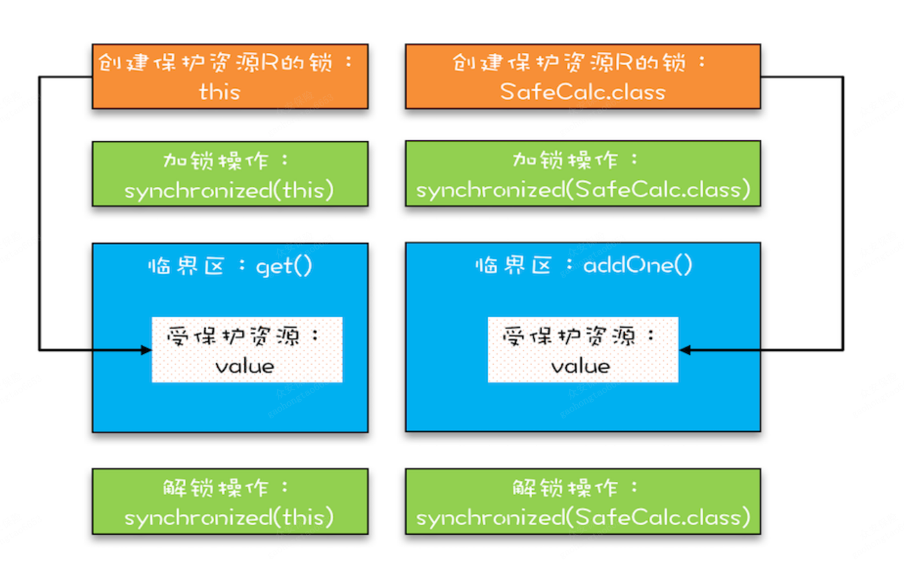

解决原子性问题
那原子性问题到底该如何解决呢？
原子性问题的源头是线程切换；
“同一时刻只有一个线程执行”这个条件非常重要，我们称之为互斥。如果我们能够保证对共享变量的修改是互斥的，那么，无论是单核 CPU 还是多核 CPU，就都能保证原子性了。
锁模型
一段需要互斥执行的代码称为临界区这个过程非常像办公室里高峰期抢占坑位，每个人都是进坑锁门（加锁），出坑开门（解锁），如厕这个事就是临界区。

这个模型更像现实世界里面球赛门票的管理，一个座位只允许一个人使用，这个座位就是“受保护资源”，球场的入口就是 Java 类里的方法，而门票就是用来保护资源的“锁”，Java 里的检票工作是由 synchronized 解决的。
锁和受保护资源的关系
- 受保护资源和锁之间的关联关系是 N:1 的关系。还拿前面球赛门票的管理来类比，就是一个座位，我们只能用一张票来保护，如果多发了重复的票，那就要打架了。
- 用同一把锁来保护多个资源，这个对应到现实世界就是我们所谓的“包场”了。
保护没有关联关系的多个资源
用不同的锁对受保护资源进行精细化管理，能够提升性能。这种锁还有个名字，叫细粒度锁。
下面这幅图很直观地展示了我们是如何使用共享的锁 Account.class 来保护不同对象的临界区的。

总结
如果资源之间没有关系，很好处理，每个资源一把锁就可以了。如果资源之间有关联关系，就要选择一个粒度更大的锁，这个锁应该能够覆盖所有相关的资源。除此之外，还要梳理出有哪些访问路径，所有的访问路径都要设置合适的锁，这个过程可以类比一下门票管理。
“原子性”的本质是什么？其实不是不可分割，不可分割只是外在表现，其本质是多个资源间有一致性的要求，操作的中间状态对外不可见。例如，在 32 位的机器上写 long 型变量有中间状态（只写了 64 位中的 32 位），在银行转账的操作中也有中间状态（账户 A 减少了 100，账户 B 还没来得及发生变化）。所以解决原子性问题，是要保证中间状态对外不可见。